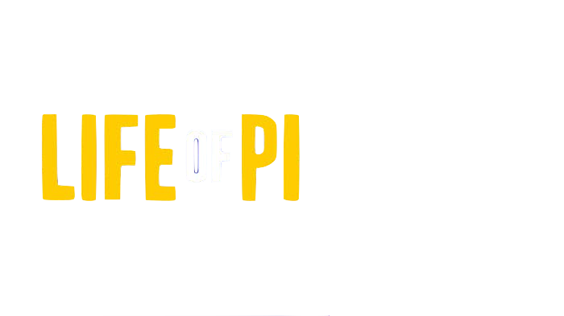

Spirited Away" is a critically acclaimed animated fantasy film directed by Hayao Miyazaki, produced by Studio Ghibli, and released in 2001. The film is a masterpiece of Japanese animation, often considered one of the greatest animated films ever made.

"Fight Club" is a dark and thought-provoking drama film released in 1999, directed by David Fincher and based on the 1996 novel of the same name by Chuck Palahniuk. The film stars Edward Norton as the unnamed protagonist, referred to as "the Narrator," and Brad Pitt as Tyler Durden.

"Life of Pi" is a captivating adventure drama film released in 2012, directed by Ang Lee, based on the best-selling novel of the same name by Yann Martel. The film combines elements of fantasy, spirituality, and survival to tell a thought-provoking and visually stunning story.
